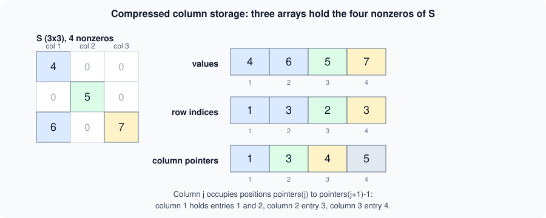
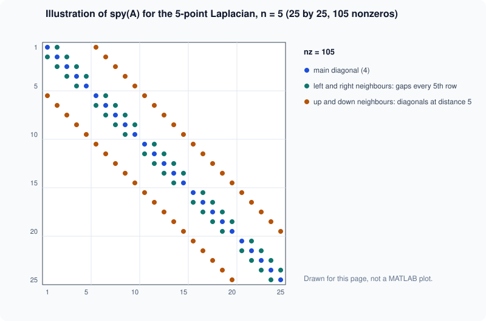

Sparse Matrices and Graphs
|
This content was generated with the assistance of AI and should be verified against the official documentation before being relied on in production. |
Written against MATLAB R2026b. The examples marked "Octave 11.3.0 output" were run in GNU Octave 11.3.0; Octave prints sparse matrices in its own "Compressed Column Sparse" layout, and MATLAB lays them out differently, so only the numbers should be compared. Octave 11.3.0 has no graph or digraph class in the setup used here, so the graph examples are labelled "not run here" and checked against the R2026b documentation. The sparse examples need only base MATLAB.
A sparse matrix stores only its nonzero elements. The documentation’s overview says that sparse storage applies to double, single and logical data with a large percentage of zeros, that all built-in arithmetic, logical and indexing operations work on sparse matrices or on mixtures of sparse and full ones, and that operations on sparse matrices return sparse matrices while operations on full matrices return full ones. This page covers creating and storing sparse matrices, the five-point Laplacian of the heatflow plate, iterative solvers, and the graph objects that describe the same grid. Dense linear algebra is on Linear Algebra, and the plate scenario is introduced in the heatflow scenario.
Creating sparse matrices
| Function | Purpose |
|---|---|
|
Builds an m-by-n sparse matrix with |
|
An all-zero sparse matrix with room reserved for |
|
Places the columns of |
|
Sparse identity matrix. |
|
Convert to a full matrix, and test for sparse storage. |
|
Number of nonzeros, and the number of storage slots allocated. |
|
Row indices, column indices and values of the nonzeros: |
|
A matrix with the same pattern and every nonzero replaced by 1. |
S = sparse([1 2 3 3],[1 2 1 3],[4 5 6 7],3,3);
full(S)
nnz(S)
[i,j,v] = find(S)
B = spdiags([1 -2 1].*ones(5,1), -1:1, 5, 5);
full(B)Octave 11.3.0 output (the layout of S itself is omitted):
ans = 4 0 0 0 5 0 6 0 7 ans = 4 i = 1 3 2 3 (a column vector) j = 1 1 2 3 v = 4 6 5 7 ans = -2 1 0 0 0 1 -2 1 0 0 0 1 -2 1 0 0 0 1 -2 1 0 0 0 1 -2
find returns the nonzeros column by column, which already hints at how they are stored. Assigning into an existing sparse matrix, as in t(2,2) = 9, works but is slow when done in a loop, because each insertion may shift the stored data; build the lists i, j, v first and call sparse once.
Compressed column storage
MATLAB stores a sparse matrix in compressed column (CSC) form: the nonzero values and their row indices, both ordered column by column, plus one pointer per column marking where that column starts. The figure shows it for the matrix S above.

(Original illustration for this page.) The three arrays can be rebuilt from find. This was run in Octave 11.3.0; the column pointers are one-based, with one entry more than there are columns, and they are computed here by hand, not read from MATLAB’s internal storage, which is not exposed:
[i,j,v] = find(S);
colptr = [1; 1+cumsum(accumarray(j,1))].'
rowidx = i.'
vals = v.'colptr = 1 3 4 5 rowidx = 1 3 2 3 vals = 4 6 5 7
Consequences of the layout:
-
Accessing a column (
S(:,k)) is cheap; accessing a row or inserting an element in the middle is not. -
Memory is proportional to
nnz, not to the number of elements. In the heatflow system below a 2500-by-2500 matrix would need 50,000,000 bytes if stored full (8 bytes perdouble), while the sparse version took about 257 kB in Octave; MATLAB reports its own figure withwhos. -
nzmaxcan exceednnz, because storage may be preallocated, as withspalloc.
Operations on sparse matrices
Whether a result is sparse depends on the operation. Octave 11.3.0 gave these answers for S; they follow the rule quoted in the documentation above, but MATLAB was not run here, so check borderline cases such as S + 1 in your release:
| Expression | Sparse? | Why |
|---|---|---|
|
no (full result) |
Sparse times full gives a full vector. |
|
yes |
Sparse times sparse stays sparse. |
|
yes |
The pattern of nonzeros is preserved. |
|
no |
Adding a nonzero scalar fills every element, so the result is full. |
Two practical warnings. First, fill-in: factoring a sparse matrix can create nonzeros where there were none, so the factor may be far denser than the matrix. Second, building a sparse matrix through a full one (sparse(rand(n))) defeats the purpose, because the full matrix is created first.
Reordering rows and columns before factoring reduces fill-in. The Octave run below builds the 900-by-900 Laplacian of a 30-by-30 grid (explained in the next section), reorders it with symamd, a symmetric approximate minimum degree ordering, and counts the nonzeros of the Cholesky factor:
n = 30; e = ones(n,1);
D = spdiags([-e 2*e -e], -1:1, n, n); I = speye(n);
A = kron(I,D) + kron(D,I); % 900-by-900 Laplacian of a 30-by-30 grid
p = symamd(A);
R1 = chol(A);
R2 = chol(A(p,p));
fprintf("nnz chol natural %d, symamd %d\n", nnz(R1), nnz(R2));Octave 11.3.0 output:
nnz chol natural 27029, symamd 10042
The exact counts depend on the ordering algorithm, so MATLAB may give different numbers, but the effect, a much sparser factor after reordering, is the point of the documentation’s reordering topic.
The five-point Laplacian
Heat diffusion on the plate in its steady state satisfies . Discretized on a square grid of interior points with the five-point stencil, each interior temperature equals the average of its four neighbours:
Neighbours on the boundary are known values and move to the right-hand side. Collecting the unknowns column by column in a vector gives a linear system with a sparse matrix . It is assembled from the one-dimensional second-difference matrix (2 on the diagonal, -1 beside it) and the Kronecker product kron: .
n = 4;
e = ones(n,1);
D = spdiags([-e 2*e -e], -1:1, n, n);
I = speye(n);
A = kron(I,D) + kron(D,I);
size(A), nnz(A)
full(A(1:6,1:6))Octave 11.3.0 output:
ans = 16 16 ans = 64 ans = 4 -1 0 0 -1 0 -1 4 -1 0 0 -1 0 -1 4 -1 0 0 0 0 -1 4 0 0 -1 0 0 0 4 -1 0 -1 0 0 -1 4
Each row has at most five nonzeros: the diagonal 4 and up to four neighbours of -1. The pattern of a 25-by-25 version (a 5-by-5 grid) is drawn below.

This figure is an original illustration drawn for this page, not a plot produced by MATLAB. In MATLAB spy(A) draws such a pattern and labels it with nz = 105; the main diagonal, the two neighbouring diagonals (interrupted every fifth row where a grid row ends) and the two diagonals at distance 5 are visible.
Solving the plate with backslash
The scenario’s heatflow.assembleSystem builds this system for the plate: a Dirichlet temperature of 100 on the left edge and 0 on the other three, where only the interior points next to the left edge contribute to the right-hand side. The function below sits in a namespace folder +heatflow. The Octave check used the same file without the arguments block, which is MATLAB syntax, with n = 50 interior points per side.
% +heatflow/assembleSystem.m
function [A,b] = assembleSystem(n, Tleft)
arguments
n (1,1) double {mustBeInteger, mustBePositive}
Tleft (1,1) double
end
e = ones(n,1);
D = spdiags([-e 2*e -e], -1:1, n, n);
I = speye(n);
A = kron(I,D) + kron(D,I);
B = zeros(n,n);
B(:,1) = Tleft; % interior points next to the left edge
b = B(:);
end[A,b] = heatflow.assembleSystem(50, 100);
T = A \ b;
F = reshape(T,50,50);
fprintf("size %d x %d, nnz %d, density %.4f%%\n", size(A,1), size(A,2), nnz(A), 100*nnz(A)/numel(A));
fprintf("solved, max T %.3f, min T %.3f\n", max(T), min(T));
fprintf("residual small: %d\n", norm(A*T - b)/norm(b) < 1e-10);
fprintf("F(25,1) = %.3f F(25,25) = %.3f F(25,50) = %.3f\n", F(25,1), F(25,25), F(25,50));Octave 11.3.0 output:
size 2500 x 2500, nnz 12300, density 0.1968% solved, max T 96.047, min T 0.042 residual small: 1 F(25,1) = 96.047 F(25,25) = 25.818 F(25,50) = 0.678
The matrix has 12,300 nonzeros among 6,250,000 elements. A \ b with a sparse A picks a sparse direct solver; the mldivide documentation describes how the method is chosen from the structure of the matrix (banded, triangular, symmetric positive definite and so on), and that logic is covered with the dense cases in Linear Algebra. The result T is a full vector, which reshape turns into the 50-by-50 temperature field F. Values fall from about 96 next to the hot edge to under 1 at the opposite edge, as expected.
Iterative solvers and preconditioners
Direct factorization fills in; for very large grids an iterative method needs only products with A. MATLAB provides pcg (conjugate gradients, for symmetric positive definite matrices such as this Laplacian), gmres and bicgstab (for general square matrices). The call [x,flag,relres,iter] = pcg(A,b,tol,maxit,M1,M2) uses the tolerance tol, at most maxit iterations and an optional preconditioner M = M1*M2. The documented flag values are 0 (converged within maxit), 1 (maxit reached without converging), 2 (ill-conditioned preconditioner), 3 (stagnation) and 4 (a quantity became too small or too large).
A preconditioner approximates A cheaply so the iteration converges in fewer steps. ichol(A) computes an incomplete Cholesky factor L for symmetric positive definite matrices, and ilu(A) an incomplete LU factorization [L,U] for general ones. They keep roughly the sparsity of A instead of the full fill-in.
n = 30; e = ones(n,1);
D = spdiags([-e 2*e -e], -1:1, n, n); I = speye(n);
A = kron(I,D) + kron(D,I);
b = ones(n*n,1);
[x,flag,relres,iter] = pcg(A,b,1e-8,500);
L = ichol(A);
[x2,flag2,relres2,iter2] = pcg(A,b,1e-8,500,L,L');
[x3,flag3] = gmres(A,b,[],1e-8,200);
[x4,flag4] = bicgstab(A,b,1e-8,500);
fprintf("pcg flag=%d iter=%d\n", flag, iter);
fprintf("ichol pcg flag=%d iter=%d\n", flag2, iter2);
fprintf("gmres flag=%d\n", flag3);
fprintf("bicgstab flag=%d\n", flag4);
xd = A \ b;
fprintf("pcg vs backslash: %.1e\n", norm(x - xd)/norm(xd));Octave 11.3.0 output (flag 0 means converged in all four runs):
pcg flag=0 iter=55 ichol pcg flag=0 iter=28 gmres flag=0 bicgstab flag=0 pcg vs backslash: 1.1e-10
Preconditioning with ichol roughly halved the iterations of pcg in this test. Iteration counts differ between MATLAB and Octave, and gmres and bicgstab may report their iterations differently, so rerun to see MATLAB’s own figures. The last line compares the pcg solution with the backslash result: they agree to a relative difference of about .
For problems like this with a moderate size, backslash is usually faster and simpler. Iterative methods pay off when the matrix is too large to factor, or when only a matrix-vector product is available.
Graphs from the grid
A sparse matrix is also the adjacency matrix of a graph. The off-diagonal part of the Laplacian says which grid points are neighbours. Octave 11.3.0 was used to extract it for a 3-by-3 grid and count the connections:
n = 3; e = ones(n,1);
D = spdiags([-e 2*e -e], -1:1, n, n); I = speye(n);
A = kron(I,D) + kron(D,I);
Adj = spones(A - spdiags(diag(A),0,9,9));
disp(full(Adj))
fprintf("edges %d\n", nnz(Adj)/2); % each edge appears twiceOctave 11.3.0 output:
0 1 0 1 0 0 0 0 0 1 0 1 0 1 0 0 0 0 0 1 0 0 0 1 0 0 0 1 0 0 0 1 0 1 0 0 0 1 0 1 0 1 0 1 0 0 0 1 0 1 0 0 0 1 0 0 0 1 0 0 0 1 0 0 0 0 0 1 0 1 0 1 0 0 0 0 0 1 0 1 0 edges 12
The graph class (undirected edges) and digraph class (directed edges) wrap such a matrix in an object. The graph and network algorithms page lists the functions graph, digraph, shortestpath (shortest path between two nodes), conncomp (connected components), adjacency (back to the matrix) and plot. The following is not run here:
G = graph(Adj); % undirected graph, 9 nodes, 12 edges
numnodes(G), numedges(G)
[p,d] = shortestpath(G, 1, 9) % corner to opposite corner
bins = conncomp(G) % one component: all ones
plot(G)Expected, from the grid structure rather than a captured run: every path from node 1 to node 9 has length 4 (two steps across, two down), and conncomp assigns all nodes to one component. For a plate with a hole, removing the nodes of the hole from the graph and calling conncomp would reveal disconnected regions. The plot function draws nodes and edges and, with weights or node coordinates, can mimic the geometry of the plate.
Where the books are outdated
Books written for MATLAB 5 to 7 introduce sparse, spalloc, spdiags, speye, spy and the iterative solvers pcg, gmres and bicgstab, and these still exist with the same names. What changed is the surroundings. Older code builds Laplacians with explicit loops or with spdiags alone, and kron is now the usual idiom. The graph and digraph classes are far newer than those books, so graph problems in them are written with adjacency matrices and hand-coded searches. Older iterative-solver examples pass the preconditioner as M1,M2 factors computed with luinc or cholinc; those functions were replaced by ilu and ichol and are no longer part of MATLAB, so old code that calls them must be ported.